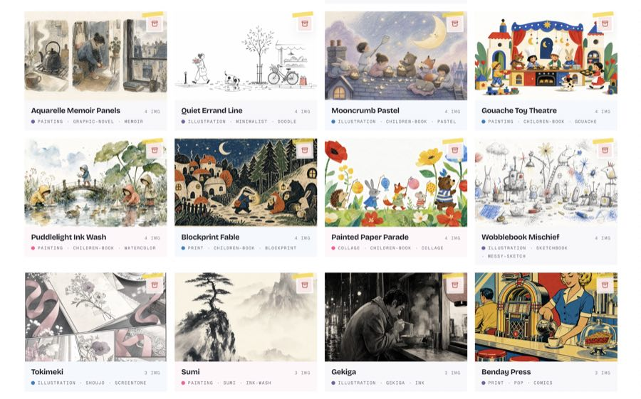

katagami
THE CATALOG
Art styles
Every design language has an art
style
.
Browse the art styles on their own too. The catalog lists each style's recipe. Pick the look first, then the language.

katagami.ai/art-styles